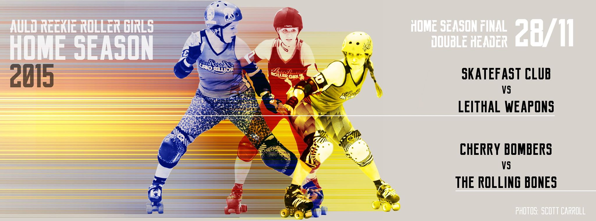

ARRG and Glasgow Home Seasons Final!
This Saturday (28th November) sees Home Teams Tournaments on both coasts, as Glasgow Roller Derby and Auld Reekie Roller Girls both host extravaganzas.

Glasgow Roller Derby are rolling their entire Home Season into one giant event, with the Bad Omens, Death Stars and T-Wrecks playing each other in a 5 hour triple header tournament. Last year, the Bad Omens took the trophy, but nothing is certain with the new format! As well as GRD skaters, the teams will be filled out by a few guest skaters from other leagues. Doors open at 11:30am, for team skateouts at 11:50, and first whistle for Bad Omens v Death Stars at 12midday. As always, sponsors Pinto will be hosting the post-event food.
Tickets are available from Eventbrite (£5), or on the door for £7. As always, the venue is the ARC Sports Centre at Glasgow Caledonian University.

Meanwhile, on the other coast, Auld Reekie's Home Season will be coming to a triumphant conclusion with the Home Teams Final Double Header. As well as the Final itself, which sees the Leithal Weapons play off against The Skatefast Club for the 2015 trophy, third-place team the Cherry Bombers will take on mysterious guest team The Rolling Bones. Last year, The Skatefast Club managed to take the win over the Leithals, so this year's repeat should be even harder fought, as the Leithal Weapons seek to redress the balance. (The event will also be preceded by the Auld Reekie Derby Taster Session, so those interested in seeing what Roller Derby is all about can make a whole day of it!)
ARRG has arranged a special license for a bar, and there will be both half-time entertainment and a charity fundraising raffle. There will also be separate seating areas for families and young children, and a children’s craft corner to keep the youngest fans amused.
Tickets are £6 in advance, £8 on the door, available on Brown Paper Tickets. Unwaged and Senior (over 65's) fans can enter for the discounted rate of £5 per ticket, and disability leisure card holders and a carer may enter free.
As always, the event will be held at Meadowbank Stadium, on London Road. Doors open at 1pm for a 1:30 start.